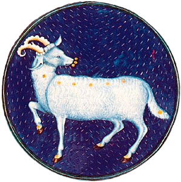

|

|
Aries contains no very bright stars; the
brightest star, Hamal (Arabic for “sheep”),
has a magnitude of 2.0. The first point of
Aries, or vernal equinox, is an intersection
of the celestial equator with the apparent
annual pathway of the Sun and the point in
the sky from which celestial longitude and
right ascension are measured. The vernal
equinox no longer lies in Aries but has been
moved into Pisces by the precession of the
equinoxes. In astrology, Aries is the first
sign of the zodiac, considered as governing
the period from about March 21 to about April
19. Its representation as a ram is identified
with the Egyptian god Amon and, in Greek
mythology, with the ram with the golden fleece,
on the back of which Phrixus, the son of King
Athamas, safely fled Thessaly to Colchis, where
he sacrificed the ram to Zeus, who placed it in the
heavens as the constellation. The ram’s golden
fleece was recovered by Jason, leader of the
Argonauts.
|